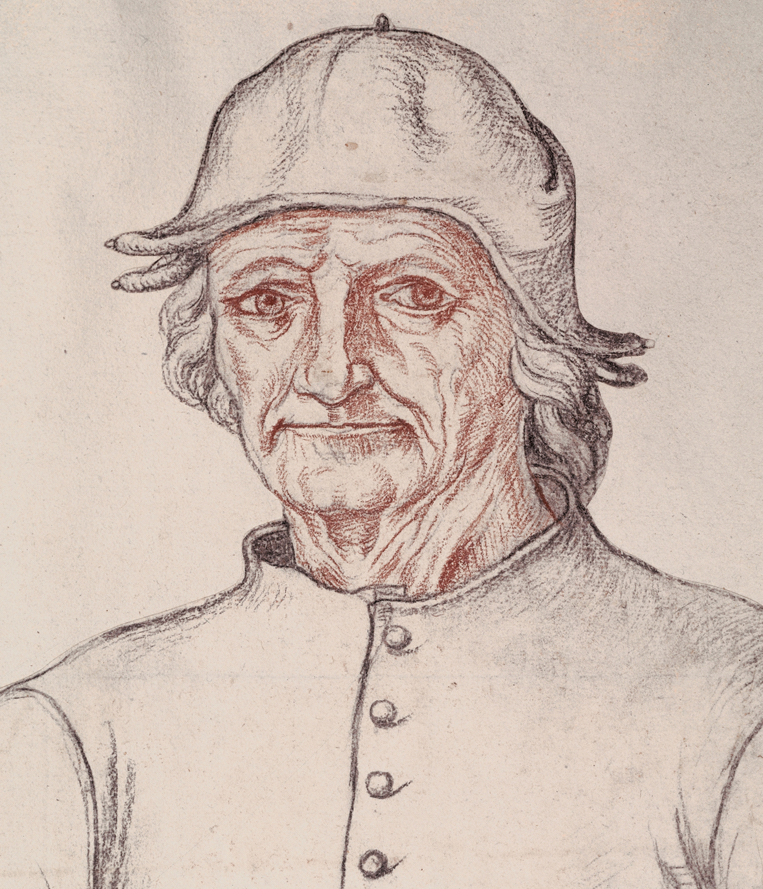

Hieronymus Bosch
Hieronymus Bosch was born as Jeroen van Aken in around 1450 to a family of established artists. His father was Antonius van Aken and his grandfather was Jan van Aken. Little is known about Bosch’s early life but he was probably trained as a painter by a family member. In his early thirties, he married Aleyt van den Mervenne, a wealthy woman from a prominent family, which suggests that his own family was also socially well-situated. Eventually, he adopted the pseudonym Hieronymus Bosch, probably referring to his home town of ‘s-Hertogenbosch or Den Bosch.
In 1488, he became a sworn member of the Brotherhood of Our Lady, a religious organization in 's-Hertogenbosch. His membership proved pivotal to his artistic career, as his first commissions came from the Brotherhood. He would go on to secure a number of other commissions through his connections with the Brotherhood and would become a leading artist in the region. He died and was buried in 1516 in the same town where he was born. His art had a strong impact on his contemporaries and on the generations of artists that followed.
Bosch’s interpretation or representation of religion appears very different from that of his contemporaries. Indeed, his distinct perspective played a significant role in the endurance of his art into modern times. Bosch viewed mankind with a pessimistic eye and evidently believed that most humans could not be saved. As a result, his works are often moralizing and he is well-known for his damning depictions of vice and sin, which were meant to reflect the folly of humanity’s inherently excessive and impulsive nature. He also occasionally moved away from explicitly Christian scenes, opting instead for secular yet still moralizing subjects. Bosch was especially interested in condemning what he considered to be base social actions. Some of his beliefs were inspired by Christian doctrine, such as his criticism of gluttony and greed. But he also critiqued habits more common in daily Netherlandish life, such as laziness, drunkenness, and lawlessness. He was especially critical of lust and sexuality, which he depicted as the culmination of mankind’s inclination towards indulgence of bodily pleasures.
Bosch’s formal and iconographical techniques also distinguish him from other sixteenth-century artists. He reworked traditional, even vernacular symbols to express religious and ethical views. He populated his paintings with invented symbolic characters meant to represent some virtue or vice of daily life. He used criminals, low-class workers, and prostitutes to represent the moral failings of humanity, but he also included figures of virtue to contrast with these. He favored hermit saints, whose ascetic lifestyle was something to be praised. Bosch is also well-known for his fantastical creatures and his outlandish depictions of Hell. However, even these images are a result of his moral attitudes. His work is especially characterized by eschatological thinking.
Bosch left a significant impact on the Netherlandish art world and was influential to artists like Pieter Bruegel the Elder. Bruegel was born about a decade after Bosch’s death and was exposed to Bosch’s style and themes early in his artistic career. This is especially evident in his early engravings, in which he imitated Bosch’s methods of invention, particularly his signifying fantastical creatures. He was also inspired by Bosch’s religious themes. The impact of Bosch’s secular art can also be found in Bruegel’s genre imagery. Like Bosch, Bruegel populated his art with common people and scenes of their everyday lives. Bosch also influenced Bruegel’s son, Jan Brueghel the Elder, and his artwork. Though the younger Brueghel operated in a vastly different art market than his predecessors, one now dominated by wealthy collectors, he still employed many of Bosch’s distinctive techniques. This includes Bosch’s peculiar depictions of Hell and its weird creatures, often reimagined in a Classical context for Brueghel’s elite audience.
-- Ximena Valdarrago